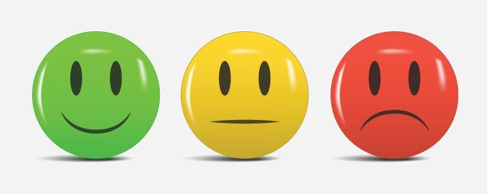
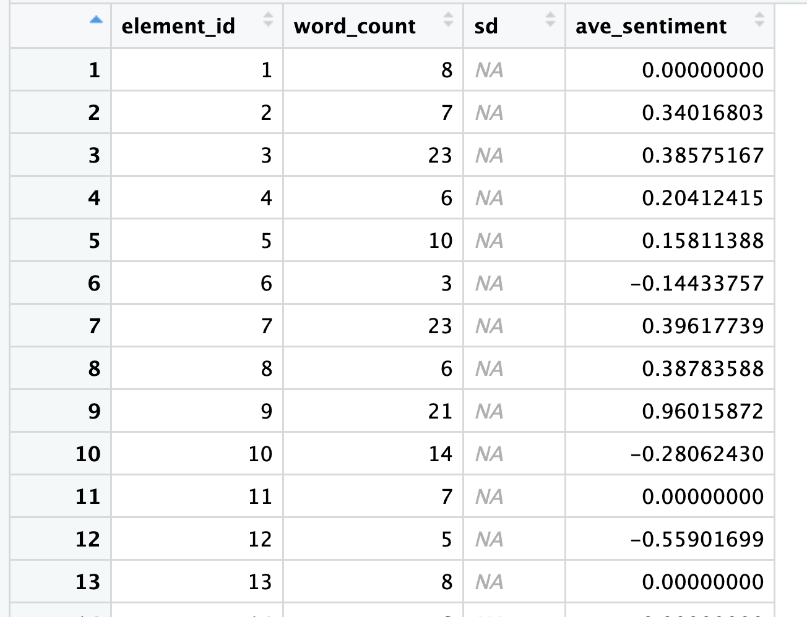

Polarity Analysis
Now that we have completed all the key preprocessing steps and our example dataset is in much better shape, we can finally proceed with sentiment analysis.
This will be a two-step approach, where we will start with the basic polarity and then, advance to a more fine-grained emotion detection, exploring different emotional expressions within text.
Polarity Classification
Polarity classification is a fundamental aspect of sentiment analysis to measure the overall emotional tone expressed in text data which can be categorized as positive, neutral or negative.
Most models assign “sentiment scores” with values ranging from -1 to +1 to represent the intensity of the sentiment, being scores closer to -1 considered negative, those closer to 0 neutral and +1 positive.

We will be using the package sentimentr (more info) to compute polarity classification and attribute sentiment scores to the posts included in our dataset.
Traditional sentiment analysis techniques assign polarity by matching words against dictionaries labeled as “positive,” “negative,” or “neutral.” While straightforward, this approach is overly simplistic: it ignores context and flattens the richness of our syntactically complex, lexically nuanced language, that transcends individual words. The sentimentr package extends lexicon-based methods by accounting for valence shifters; words that subtly alter sentiment.
The package includes 130 valence shifters that can reverse or modulate the sentiment indicated by standard dictionaries. These fall into four main categories: negators (e.g., not, can’t), amplifiers (e.g., very, really, absolutely, totally, certainly), de-amplifiers or down-toners (e.g., barely, hardly, rarely, almost), and adversative conjunctions (e.g., although, however, but, yet, that being said). This refinement is important because simple dictionary lookups miss the nuanced meaning.
In summary, each word in a sentence is checked against a dictionary of positive and negative words, like the Jockers dictionary in the lexicon package. Words that are positive get a +1, and words that are negative get a -1, which are called polarized words. Around each polarized word, we look at the nearby words (usually four before and two after) to see if they change the strength or direction of the sentiment. This group of words is called a polarized context cluster. Words in the cluster can be neutral, negators (like “not”), amplifiers (like “very”), or de-amplifiers (like “slightly”). Neutral words don’t affect the sentiment but still count toward the total word count.
The main polarized word’s sentiment is then adjusted by the surrounding words. Amplifiers make it stronger, de-amplifiers make it weaker, and negators can flip the sentiment. Multiple negators can cancel each other out, like “not unhappy” turning positive.
Words like “but,” “however,” and “although” also influence the sentiment. Words before these are weighted less, and words after them are weighted more because they signal a shift in meaning. Finally, all the adjusted scores are combined and scaled by the sentence length to give a final sentiment score for the sentence.
With this approach, we can explore more confidently whether the show’s viewers felt positive, neutral, or negative about it.
# Read data
preprocessed <- read_csv("preprocessed.csv")
head(preprocessed$text_ready)
# Compute sentiment per row/case
sentiment_scores <- sentiment_by(preprocessed$text_ready)Let’s now take a look at the sentiment_scores data frame:

It’s expected that the standard deviation is missing, because each row/case is treated as a single sentence when computing the score. Now, let’s make sure to add these scores and the labels our dataset:
# Add scores and labels to original dataset
polarity <- preprocessed %>%
mutate(score = sentiment_scores$ave_sentiment,
sentiment_label = case_when(
score > 0.1 ~ "positive",
score < -0.1 ~ "negative",
TRUE ~ "neutral"
))
# Check first rows with results
head(polarity)Next, let’s plot some results and histograms to check the distribution:
# Histogram both seasons
ggplot(polarity, aes(x = score)) +
geom_histogram(binwidth = 0.1, fill = "skyblue", color = "white") +
theme_minimal() +
labs(title = "Sentiment Score Distribution", x = "Average Sentiment", y = "Count")
# Scores per label
table(polarity$sentiment_label)
# Extract season info (s1, s2) into a new column
polarity_seasons <- polarity %>%
mutate(season = str_extract(id, "s\\d+"))
# Histogram comparison by season
ggplot(polarity_seasons, aes(x = score, fill = season)) +
geom_histogram(binwidth = 0.1, position = "dodge", color = "white") +
theme_minimal() +
labs(title = "Sentiment Score Distribution by Season",
x = "Average Sentiment", y = "Count") +
scale_fill_brewer(palette = "Set1")We could have spent more time refining these plots, but this is sufficient for our initial exploration. In pairs, review the plots and discuss what they reveal about viewers’ perceptions of the Severance show.
Well, that’s only part of the story. Now we move on to emotion detection to discover what else we can learn from the data.